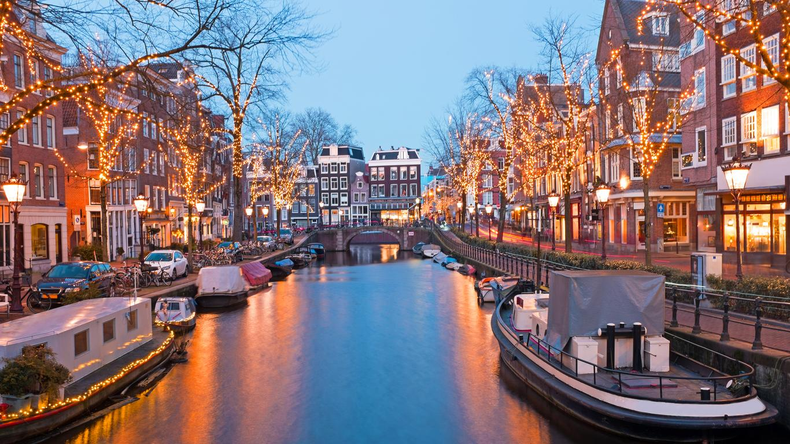
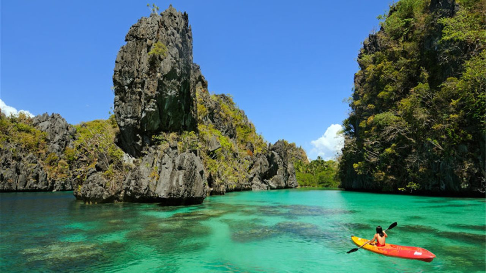

✨Viaja a Londres en Navidad Vuelos + de 2 a 6 noches en Hostel junto al Big Ben Max participantes: 10 personas Viaja a Paris en San Valentín Vuelos + de 2 a 9 noches en Hostel junto a la Torre Eiffel Max participantes: 6 personas Viaja a Venecia en Carnaval Hostel cerca de los canales Max participantes: 10 personas  Viaja a Amsterdam Vuelos + de 2 a 6 noches en Hostel cerca del centro Max participantes: 15 personas  Escapate a Filipinas Vuelos internacionales con escala en China de un día. Os podemos hacer el recorrido y reservaros hoteles o podemos improvisar con tus nuevos compañeros de viaje Max participantes: 10 personas Laponia en Enero ¿Quieres ver las aurolas boreales junto a tu nuevo travelteam? Vuelos + de 2 a 6 noches en Hostel Max participantes: 10 personas Viaje de Semana Santa a Oporto Vuelos + de 2 a 6 noches en Hostel junto a la Torre de los Clérigos Max participantes: 8 personas Viaje Exclusivo a Roma Vuelos + de 2 a 6 noches en Hotel 4* a 400m de la PLaza de la República Max participantes: 10 personas ⛵ Viajazo a Tenerife en Hotel Hard Rock 5* Vacaciones 5* en Tenerife: vuelos y de 3 a 7 noches en hotel 5^* con desayuno incluido! Max participantes: 10 personas
¿Quiénes somos? Somos unos alumnos de Desarrollo de Aplicaciones Web, que nos apasiona viajar, pero siendo realistas, ¿siempre que quieres viajar, encuentras compañeros de viaje? Nuestra idea es juntar a varias personas con intereses en común y que juntos realicen un viaje. Se dice que en la vida hay varias clases de amigos, y nosotros tenemos como proposito crear cuantos mas TravelTeam mejor, porque la amistad que une un viaje, ya nunca lo separá nadie. ¿Cómo funciona? Nuestros travelteams tienen varias opciones, si les interesa realizar un viaje concreto, porque es su sueño, o simplemente porque le apetece, tiene la opción de crear un viaje en nuestra app y los diferentes travelteams que esten interesados se puedan apuntar. Una vez inscriptos en el viaje, se creará un chat dentro de la app, el cual pondrá a todos los travelteams inscritos para que puedan gestionar el viaje, ponerse de acuerdo con fechas, lugares de salida etc. La misma aplicación también creará opciones de viajes diferentes, para diferentes estilos de travelteams.Las opciones creadas por la app, tendrán precio y fechas ya fijadas, para que los travelTeam no tengan que preocuparse de nada, nosotros lo gestionamos todo. Y además también es posible añadir "plan de viaje" en el cual uno de nuestros expertos en viaje, les creará una ruta por la ciudad a la que van a viajar, un diario de viaje, para no perderse nada en su viaje! ¿Cómo puedo reservar? Simplemente descarga nuestra app, busca el viaje que desees y habla con tu nuevo Travelteam Consejos y trucos Simplemente descarga nuestra app, busca el viaje que desees y habla con tu nuevo Travelteam